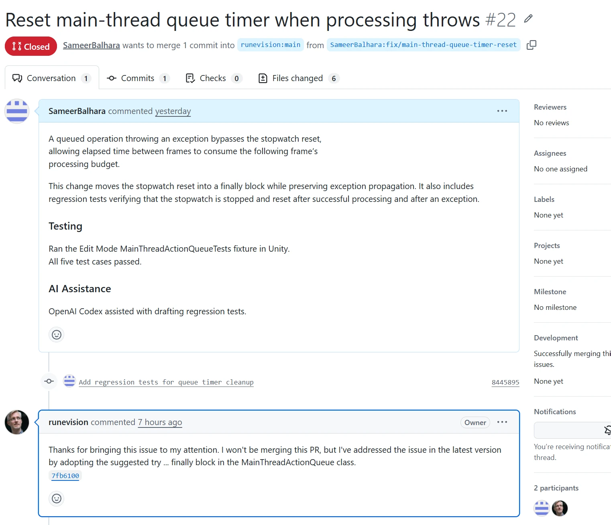

The problem
LayerProcGen is a procedural generation framework. Its MainThreadActionQueue processes queued operations within a per-frame time budget. I identified an exception-handling path in which a queued operation could throw before the queue's stopwatch was reset.
When cleanup was skipped, elapsed time between frames could count against the following frame's processing budget. The important distinction was between time spent processing queued work and time passing outside that processing window.
The proposed fix
I submitted PR #22, “Reset main-thread queue timer when processing throws”. The change moved stopwatch cleanup into a finally block so that it would run after successful processing and after an exception, while preserving exception propagation.
This keeps the exception visible to the caller while making the timer's cleanup independent of how processing exits.
Regression testing
The PR included regression tests verifying that the stopwatch was stopped and reset after successful processing and after an exception. I ran the MainThreadActionQueueTests fixture in Unity Edit Mode; all five test cases passed, as recorded in the PR.
OpenAI Codex assisted with drafting the regression tests.
Outcome: fix adopted upstream
On October 18, 2026, maintainer runevision confirmed that he had adopted the suggested try … finally approach in MainThreadActionQueue. The upstream change is part of commit 7fb6100, version 0.5.0.
“I've addressed the issue in the latest version by adopting the suggested try ... finally block”
Maintainer response on PR #22
The maintainer closed the PR without merging it. I record this contribution as fix adopted upstream: the reported issue and suggested fix informed the upstream implementation. The maintainer's response does not establish that the submitted regression tests were incorporated.
Contribution record
- Repository
- runevision/LayerProcGen
- Pull request
- #22 · Closed without merge
- Submitted
- October 17, 2026
- Adopted
- October 18, 2026
- Upstream release
- Version 0.5.0 · 7fb6100

